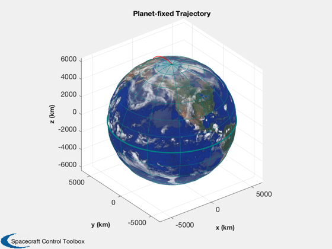
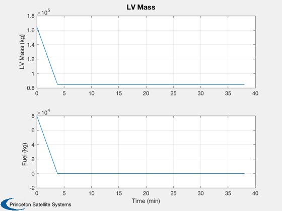
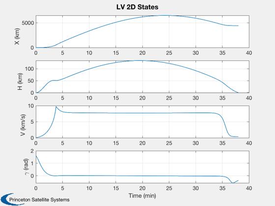
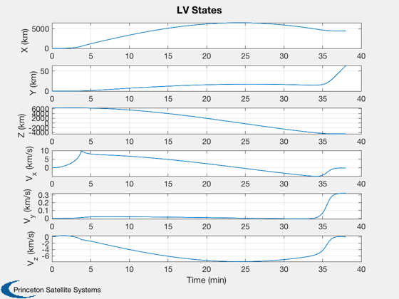
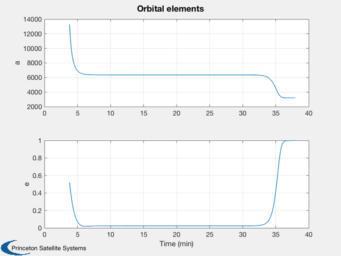

Launch vehicle 3D simulation for single stage to orbit (SSTO) vertical launch
Simulates a gravity turn trajectory in 3D. The goal is to get the vehicle moving horizontally to the radius vector at orbital velocity. The launch is vertical and at the 10th time step we rotate the velocity vector (pitchover).
Uses RHSLaunchVehicle3D which has a spherical Earth. The simulation can handle any number of stages which are set by the arrays d.mStage, d.thruster, d.uE and d.cDA each of which have one element for each stage. This uses a full 3 dimensional dynamical model in cartesian coordinates.
You vary the pitchover angle to get different trajectories. The trajectory is very sensitive to this angle. You can also change the time step for the pitch over by changing kPitch.
------------------------------------------------------------------------ See also RHSLaunchVehicle3D, Plot2D, TimeLabl, Cross, Mag, RK4, JD2000, FlightPathAngle, OrbTrack, Gamma, RV2El ------------------------------------------------------------------------
Contents
%------------------------------------------------------------------------------- % Copyright (c) 2007 Princeton Satellite Systems, Inc. % All Rights Reserved. %-------------------------------------------------------------------------------
Control
%--------- gammaPitchover = 0.05895; % This crashes back into the Earth kPitch = 10;
Vehicle model
%--------------- mSS = [ 5000]; % Dry mass of the vehicle mSP = [ 80000]; % Fuel mass thrust = [ 1400]; % Thrust (kN) Isp = [405]; % Specific Impulse (s) rocket = CreateRocketModel(mSS, mSP, thrust, Isp, 'demo', 'l' ); d = LaunchRHSData(3, rocket); d.cDA = 2.7*2; % Drag coefficient of each stage times area
Simulation
%------------ nSim = 2400; dT = 1; r = [0;0;1]*d.Rp; v = Cross(d.omegaE,r); x = [r;v; d.rocket.mSP']; % Last number is mass of fuel % Store plot points in x %----------------------- x = [x zeros(length(x),nSim)]; for k = 1:nSim % Initiate pitchover %------------------- if( k == kPitch ) c = cos(gammaPitchover); s = sin(gammaPitchover); x(4:6,k) = [c 0 s;0 1 0;-s 0 c]*x(4:6,k-1); end % Propagate one step %------------------- x(:,k+1) = RK4( @RHSLaunchVehicle3D, x(:,k), dT, 0, d ); if( Mag(x(1:3,k+1)) - d.Rp <= eps ) break; end end nSim = k; x = x(:,1:(nSim+1));
Plotting
% Plot the trajectory %-------------------- t = (0:nSim)*dT; jD = JD2000 + t/86400; OrbTrack( x(1:3,:), jD, '3d', d.planet ); % Create the time array and label %-------------------------------- [t, tL] = TimeLabl( t); % Compute the mass %----------------- m = x(7,:) + d.rocket.mS(1); % Plot the mass %-------------- yL = {'LV Mass (kg)' 'Fuel (kg)' }; Plot2D( t, [m;x(7,:)], tL, yL, 'LV Mass'); % Plot the states %---------------- yL = {'X (km)' 'H (km)' 'V (km/s)' '\gamma (rad)'}; gamma = FlightPathAngle( x(1:6,:) ); h = Mag(x(1:3,:)) - d.Rp; Plot2D( t, [x(1,:);h;Mag(x(4:6,:));gamma], tL, yL, 'LV 2D States'); yL = {'X (km)' 'Y (km)' 'Z (km)' 'V_x (km/s)' 'V_y (km/s)' 'V_z (km/s)'}; Plot2D( t, x(1:6,:), tL, yL, 'LV States'); % Elements from burnout onward %----------------------------- j = find(x(7,:) <= 0 ); j = j(1); el = zeros(6,nSim-j+1); for k = 1:size(el,2); i = k + j(1); el(:,k) = RV2El( x(1:3,i), x(4:6,i) )'; end Plot2D( t(j:nSim), [el(1,:);el(5,:)], tL, {'a' 'e'}, 'Orbital elements' ) %-------------------------------------- % PSS internal file version information %-------------------------------------- % $Id: d1d4de240c6b5476c25afea47fe0543ad8faa79a $    